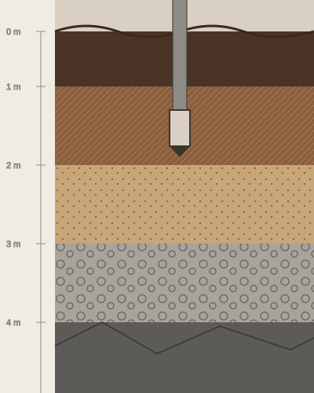

Ingeniería · Laboratorio · Control de calidad
Precisión técnica para construir con confianza.
Realizamos ensayos, estudios y servicios especializados para apoyar la toma de decisiones en proyectos de ingeniería civil, infraestructura y construcción.
Resultados técnicos para decisiones de ingeniería.

Resultados confiables
Información técnica para respaldar decisiones de ingeniería.
Equipos calibrados
Mediciones realizadas bajo procedimientos de control.
Personal especializado
Experiencia técnica aplicada a cada proyecto.
Acompañamiento
Atención durante las diferentes etapas del servicio.
img/nosotros.webp
Quiénes somos
Ingeniería respaldada por calidad y compromiso.
INCONTECH S.A.S. desarrolla servicios especializados de laboratorio, estudios y consultoría para proyectos de ingeniería civil. Nuestro trabajo integra conocimiento técnico, control de calidad y procedimientos orientados a entregar información confiable para la toma de decisiones.
Desde la caracterización de materiales hasta los estudios de campo y la consultoría especializada, acompañamos diferentes etapas de los proyectos con una visión técnica, responsable y orientada a resultados.
Conoce INCONTECHHaciendo la diferencia con excelencia
Calidad
Procesos orientados a resultados confiables.
Innovación
Aplicación de herramientas y metodologías para mejorar nuestros servicios.
Compromiso
Acompañamiento responsable durante cada proyecto.
Mejora continua
Evaluación permanente de nuestros procesos.
Nuestros servicios
Soluciones técnicas para cada etapa de su proyecto.
Desde el laboratorio y la caracterización de materiales hasta los estudios especializados y la consultoría, integramos diferentes capacidades para responder a las necesidades técnicas de cada proyecto.
Del material al dato. Del dato a la decisión.
Muestra, ensayo, análisis, resultado, decisión.
Cada ensayo genera información que puede convertirse en una herramienta para evaluar materiales, verificar condiciones y respaldar decisiones de ingeniería.
Perfil del terreno
Cada capa pide un ensayo distinto.
Explore un perfil estratigráfico ilustrativo y conozca qué ensayos de laboratorio y métodos de exploración se usan para caracterizar cada material. El alcance exacto se define en la cotización.
Geofísica
Explorar lo que no se ve.
Los métodos geofísicos permiten obtener información complementaria sobre el subsuelo y apoyar la interpretación de las condiciones del terreno.
- MASW
- Tomografía de refracción sísmica
- Tomografía de resistividad eléctrica
- SEV
Patología estructural
Antes de intervenir, hay que entender.
Nuestros estudios patológicos y ensayos permiten obtener información sobre las condiciones de elementos estructurales y apoyar la evaluación técnica de una estructura.
- Extracción de núcleos
- Esclerometría
- Determinación de refuerzo
- Carbonatación
- Regatas
img/patologia.webp
Consultoría
Cuando los resultados deben convertirse en decisiones.
Complementamos el trabajo de laboratorio y campo con servicios de consultoría orientados al desarrollo, evaluación y acompañamiento de proyectos de ingeniería civil.
- Estudios geotécnicos
- Estabilización de taludes
- Topografía
- Diseños de pavimentos
- Diseños estructurales
- Diseños geométricos viales
- Diseños hidráulicos
- Vulnerabilidad sísmica
Nuestro proceso
De la necesidad técnica al resultado.
Organizamos cada servicio mediante una secuencia clara para mantener trazabilidad, comunicación y control.
- 01 Entender
Conocemos el alcance, las condiciones del proyecto y la necesidad técnica.
- 02 Planificar
Definimos metodología, recursos, información necesaria y alcance del servicio.
- 03 Ejecutar
Realizamos las actividades de laboratorio o campo correspondientes.
- 04 Analizar
Procesamos e interpretamos la información obtenida.
- 05 Entregar
Presentamos resultados e información técnica de forma clara y estructurada.
- 06 Acompañar
Brindamos soporte para facilitar la interpretación y utilización de los resultados.
Calidad y control
La calidad comienza mucho antes del resultado.
En INCONTECH, los procesos se orientan al cumplimiento de requisitos técnicos aplicables, al control de los procedimientos y a la generación de resultados confiables.
- Procedimientos
- Equipos
- Calibración
- Personal
- Trazabilidad
- Mejoramiento continuo
- 01Control
- 02Calibración
- 03Análisis
- 04Resultado
Nuestros proyectos
Experiencia aplicada a proyectos reales.
Nuestro trabajo se ha desarrollado en proyectos de diferentes características y escalas, en los que el control de calidad y la información técnica son parte fundamental del proceso.
Experiencia aplicada a proyectos de infraestructura, vivienda, edificaciones, vías y obras civiles. Nombres y fechas pendientes de validación con INCONTECH.
¿Por qué INCONTECH?
Más que un ensayo: información para tomar decisiones.
Precisión
Procesos técnicos orientados a generar resultados confiables.
Calidad
Control y seguimiento de los procesos asociados al servicio.
Capacidad
Servicios de laboratorio, campo y consultoría.
Acompañamiento
Comunicación directa durante el desarrollo del proyecto.
Responsabilidad
Cumplimiento de los compromisos adquiridos.
Mejora continua
Revisión permanente de nuestros procesos y servicios.
Soluciones para diferentes tipos de proyectos
- Infraestructura vial
- Edificaciones
- Vivienda
- Puentes
- Urbanismo
- Obras públicas
- Obras privadas
- Proyectos geotécnicos
¿Tiene un proyecto que necesita respaldo técnico?
Cuéntenos qué necesita. Nuestro equipo puede orientarlo sobre el servicio, estudio o ensayo más adecuado para su proyecto.
Cuéntenos sobre su proyecto.
Comparta la información básica de su necesidad y nuestro equipo se pondrá en contacto con usted.
Hablemos de su proyecto.
(+57) 321 271 8824
(+57) 301 709 6659
comercial@incontechsas.com
laboratorio@incontechsas.com
incontechsas@gmail.com
Carrera 28d N°3b-08, Barrio El Palmar,
Villavicencio – Meta.